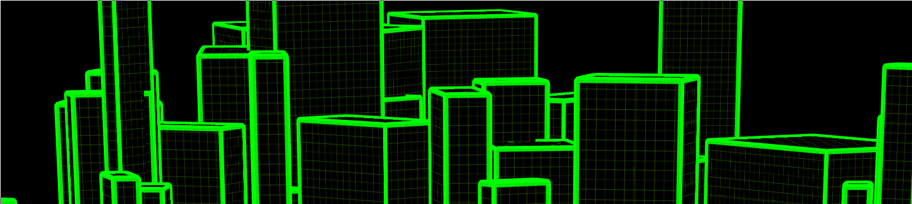
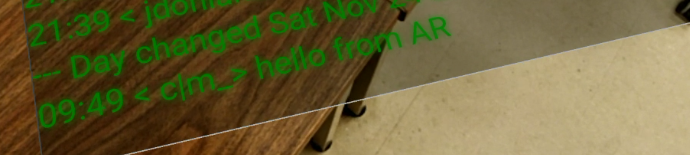
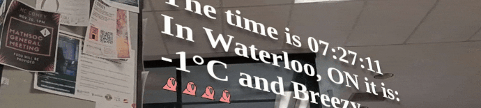
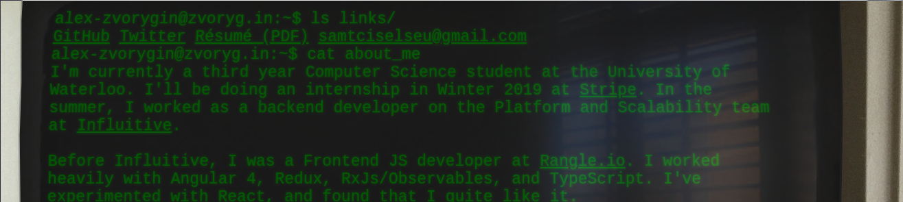
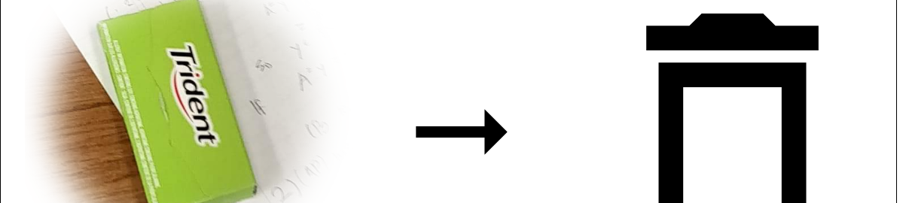

-
City, an animation (CSS, no WebGL!) inspired bythe computer graphics from the landing scene in Escape From New York

-
IRC in AR in a mobile browser, using ar.js I embedded #csc on freenode into AR

-
Track, using object-tracking and CSS transforms to embed (interactive!) DOM elements onto a video of real space.

-
IBM, IBM PowerPC in-browser. I tried to make it look as real as possible, the crt flickers, the letters glow and are skewed, and other tidbits.

-
Recycle, a small joke website riffing on my friend's insistence that everyone recycle.
